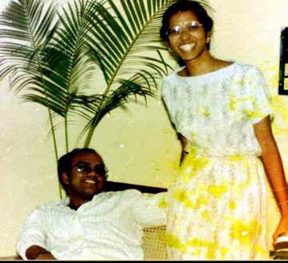

Man of the people
Man of the people
Jaffna Monitor hellojaffnamonitor@gmail.com 13 Man of the people People and former LTTE fighters who closely interacted with Mahathaya shared their insights with the Jaffna Monitor, emphasizing that Mahathaya was a man of the people. Like Captain Pandithar (S. Ravindran), who was known to be a childhood friend of Prabhakaran and served as a Jaffna commander until his death in January 1985, Mahathaya also possessed a remarkable ability to connect with people easily. His capability to engage with individuals and sway them into supporting the LTTE was notable. Indeed, at a certain juncture, Mahathaya effectively led the LTTE's public relations (PR) efforts, even though there was no formally designated PR unit within the organization. His role in this capacity was significant, as he played a crucial role in shaping the LTTE's interactions and image with the public, leveraging his ability to connect with people and communicate the group's objectives and perspectives. In 1984, Mahathaya was appointed as the Vanni regional commander of the LTTE by Prabhakaran. The Vanni region, encompassing the districts of Kilinochchi, Mannar, Mullaitivu, and Vavuniya, was a crucial area for the LTTE. Sources within the LTTE have stated that Mahathaya served effectively as the Vanni commander. Significantly, in 1987, when the LTTE leadership had to relocate its Base to the Vanni region amidst the conflict with the Indian Peace Keeping Force, Mahathaya's network and contacts in the area proved invaluable. His connections and familiarity with the Vanni region greatly assisted Prabhakaran and the LTTE in establishing their new Base and continuing their operations during this critical period. Behind the Scenes: Mahathaya's Appointment as LTTE's Deputy Leader Mahathaya's role in the history of the Liberation Tigers of Tamil Eelam (LTTE) is indeed significant, as he was the first and ultimately the last person to be designated as the Deputy Leader of the organization. This position was not reestablished following Mahathaya's arrest and execution. Despite the lack of official documentation, credible sources have confirmed to the Jaffna Monitor that Mahathaya was appointed deputy leader by LTTE leader Prabhakaran in 1987. Before the signing of the Indo-Lanka Accord on July 29, 1987, the Indian government extended an invitation to Prabhakaran for discussions in New Delhi. Initially reluctant, Prabhakaran eventually agreed to the visit. On July 24, 1987, he was flown from the Suthumalai Amman temple grounds to Chennai aboard an Indian Army military helicopter. From Chennai, he continued his journey to Delhi on a military flight. Accompanying him from Suthumalai were key LTTE figures 'Yogi' Yogaratnam and Thileepan, along with Hardeep Puri, who was then serving as the 1st Secretary of the Indian High Commission and is currently a Minister in Narendra Modi's Government. In Chennai, Prabhakaran was From left: LTTE's Col. Shankar, Mahathaya, Leader Prabhakaran, Yogi, and The Hindu Newspaper's Editor N. Ram in Chennai. LTTE's Shankar, Mahathaya, Prabhakaran, and Yogi, with Gaddafi (standing) alongside IPKF officers.

Jaffna Monitor hellojaffnamonitor@gmail.com 14 joined by Anton Balasingham, the LTTE's chief political strategist, for the trip to Delhi. Before leaving for Delhi, Prabhakaran internally announced within the LTTE that Mahathaya would assume the role of Deputy Leader in his absence. While this appointment was not formalized through public statements or documented evidence, sources confirmed that Prabhakaran explicitly directed his cadres to adhere to Mahathaya's orders during his absence. Differing Perspectives on Mahathaya's Path to LTTE Leadership Within the ranks of former LTTE members who spoke to the Jaffna Monitor, a divergence of opinion exists regarding the reasons behind Mahathaya's initial rise within the LTTE. One school of thought suggests that Mahathaya's elevation was primarily due to his close relationship with Prabhakaran. These former members pointed out that Prabhakaran had known Mahathaya for a long time, and both hailed from the same place, Valvettithurai. This geographical and personal connection reportedly led Prabhakaran to view Mahathaya as harmless and trustworthy. Sources suggest that Prabhakaran's perception of Mahathaya significantly aided his rise within the LTTE. Additionally, sources pointed out to Jaffna monitor that Prabhakaran believed Mahathaya, colloquially known as 'Mokku Mahathaya,' was not a competitor for his leadership. This belief that Mahathaya could not effectively challenge Prabhakaran's authority, sources believe, further contributed to Mahathaya's elevation in the organization. However, this view is contested by another group of former LTTE members. They believe Mahathaya's rise was more circumstantial, particularly following Kittu's departure to Chennai. They point out that Baby Pirabhakaran with Anton Balasingam, LTTE's chief strategist, and IPKF officer Major General Harikirat Singh in an IPKF helicopter. Hardeep Puri, 1st Secretary of the Indian High Commission, and Captain Gupta, Defence Attaché in Jaffna, 1987, inviting Pirabhakaran to New Delhi just before the signing of the Indo-Lanka Accord.
Jaffna Monitor hellojaffnamonitor@gmail.com 15 Subramaniam, following Prabhakaran, was the most senior member of the LTTE. However, due to Baby Subramaniam's non-military background, Mahathaya, who followed him in terms of seniority, was the natural choice for a prominent position within the LTTE's military and operational framework. Arrival of the IPKF Following the signing of the Indo-Sri Lanka Accord on July 29, 1987, the Indian Peace Keeping Force (IPKF) entered Jaffna on July 30, 1987, as part of their mission in Sri Lanka. Initially, the arrival of the IPKF in Jaffna was met with a warm welcome from the local population. Unaware of the future implications, the people of Jaffna greeted the IPKF troops with garlands and flowers. Kittu's Attack and the Rise of Mahathaya in the LTTE On the night of March 29, 1987, approximately 4 and a half months before the IPKF entered Sri Lankan soil, An unidentified assailant attacked the Mitsubishi Lancer carrying Kittu on Jaffna's Second Cross Street. When the attack happened, Kittu was en route to meet his girlfriend, Cynthia, a medical student at Jaffna University. The assailant fired at the vehicle and lobbed a powerful grenade; Kittu suffered a severe injury, with his right leg being virtually severed, an injury that led to its eventual amputation. This marked the end of Kittu's long and distinguished military career with the LTTE. Following this life-altering incident, Kittu relocated to Chennai, where he took charge of the LTTE's propaganda office. The perpetrator of this attack remains unidentified to this day, with even the once-powerful LTTE intelligence wing under Pottu Amman's leadership failing to determine who was behind it. This incident, however, had a significant repercussion within the LTTE ranks. It paved the way for Mahathaya to ascend within the organization. With Kittu's move to Chennai and his shift away from active military involvement, Mahathaya's prominence within the LTTE increased substantially. He returned to Jaffna from the Vanni region and took on a more central role, overseeing military actions against Indian forces. The rising popularity of Mahathaya The relationship between the Indian Peace Keeping Force (IPKF) and the Liberation Tigers of Tamil Eelam (LTTE) took a significant turn for the worse, ultimately leading to open conflict. By October 1987, the tensions between the two groups had escalated to the point of full-scale warfare. In December 1987, following intense clashes with Indian forces, the LTTE retreated to the Vanni region. In this strategic move, Prabhakaran established his Base in Nittakaikkulam, Mullaitivu, while Mahathaya set up his Base in Omanthai Koliyankulam. During this critical period, Mahathaya's connections and deep familiarity with the Vanni region greatly assisted Prabhakaran and the LTTE in establishing their new bases and continuing their operations. During the fight, LTTE had captured 18 Indian Army soldiers and, in a move aimed at enhancing their public relations, decided to hand these soldiers over to Indian authorities. This gesture was designed to attract media attention and took place in the presence of prominent Indian journalists. The handover events were held in Chavakachcheri and Uduvil, with Mahathaya at the forefront, personally overseeing Kiddu with his wife Cynthia in Chennai

Jaffna Monitor
hellojaffnamonitor@gmail.com
16
the process. Adding to the significance of these
events, Raheem, described in a WikiLeaks cable as
the "trilingual aristocrat" and spokesperson for Kittu,
arrived in Jaffna on an Indian Army flight from
Chennai, accompanied by about 15 Indian journalists.
This strategic move by the LTTE was not only to
boost its image but also stemmed from practical
considerations. The LTTE, engaged in intense warfare
and continually on the move, was not equipped to
detain prisoners of war. Furthermore, there was
a conscious decision not to harm these soldiers.
Raheem candidly expressed to the Jaffna Monitor that
the captured soldiers were not viewed as significant
adversaries. Furthermore, there was an element of
seeking 'vilasam,' a Tamil term playfully used here to
mean publicity, especially after inflicting significant
blows on the world's fourth-largest army.
The event was widely covered in prominent
newspapers worldwide. This occasion received
considerable global attention. The coverage of this
event not only brought substantial publicity to the
LTTE but also particularly highlighted Mahathaya's
role in the process. The image of Mahathaya
alongside Brigadier Manjit Singh Minhas during
the handover became emblematic of this moment.
This act and its extensive news coverage significantly
enhanced Mahathaya's status in the international
arena. It showcased him as a key player in the LTTE's
interactions with external entities.
Media Spotlight on Mahathaya:
The Face of LTTE in Peace Talks
During this period, anti-India sentiment escalated in
southern Sri Lanka. In the 1988 presidential election,
held on December 19, Ranasinghe Premadasa
succeeded J.R. Jayewardene amidst a backdrop of
conflict in the north and east between the Indian Peace
Mahathaya, Shankar, Raheem along with IPKF officers
talking to press persons after handing over 18 IPKF
soldiers to Indian authorities.
Pirabhakaran along with Col. Shankar in Nittakaikkulam,
Mullaitivu during the IPKF period.
President Premadasa and the LTTE delegation headed by Anton Balasingam in Colombo for the second round of talks on 15 June 1989.